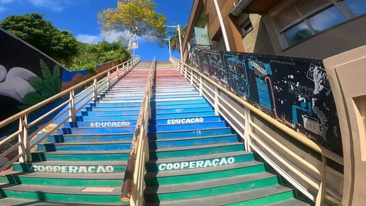

00:01:10.404
Escadaria de cores vivas dividida por corrimãos, com as palavras Cooperação e Educação pintadas nos degraus.
Praça Fortaleza do Tapajós, Santarém (PA) · confirmado
O apresentador sobe pelo acesso da Rua Adriano Pimentel e comenta o uso da escada para atividade física.
Transcrição · 00:01:06 | 00:01:14
Turismo Aqui — quadro de vídeo publicado no YouTube
Referência 1